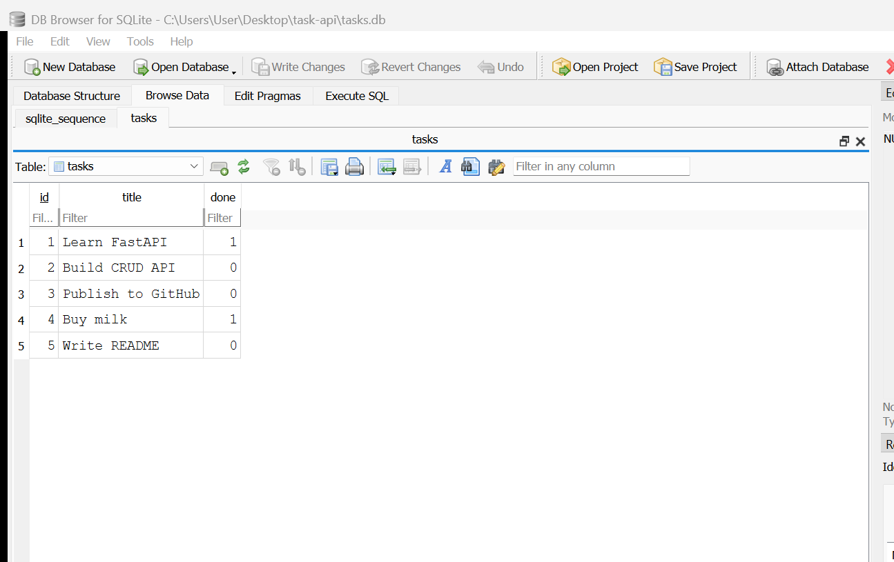
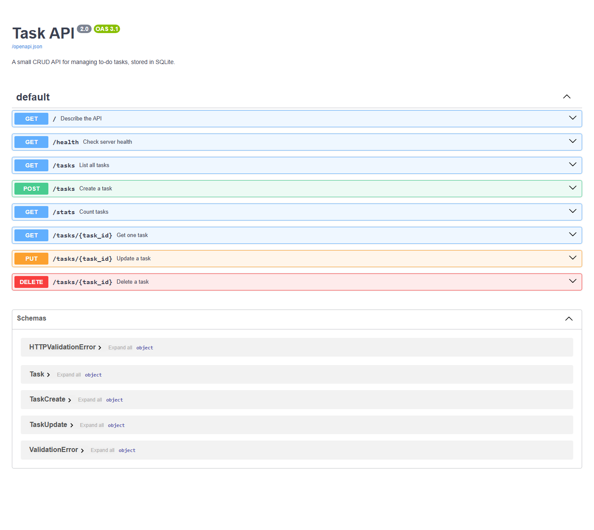

Migrating a FastAPI task management service from in-memory storage to a persistent SQLite database, without altering its public interface.
This report documents the migration of a task management REST API from in-memory storage to a SQLite database. The objective was persistence: data created through the API had to survive a server restart.
The migration was completed across six stages, each ending in a verified
checkpoint and a separate commit. All storage logic was isolated into a single
new module, db.py, leaving the route handlers in
main.py structurally unchanged. The API's public contract — its
endpoints, request bodies, response shapes, and status codes — was preserved
exactly.
The strongest evidence for that claim is that the endpoint tests written against the in-memory version pass without modification against the database version. All 20 checks pass. Because those tests describe the API's promises rather than its internals, their continued success demonstrates that storage is an implementation detail hidden behind the interface.
POST /tasks persist across server
restarts and are independently visible in the database file. The API surface
did not change: the same test suite validates both the old and new
implementations.
The predecessor assignment produced a functioning CRUD API whose tasks were held in a Python list. That list lived inside the running process, so every restart erased all data. This was a known limitation, not a defect.
tasks.db.| Criterion | Method of verification |
|---|---|
| Data survives a restart | Create via API, stop process, start process, read back |
| API contract unchanged | Pre-existing test suite passes unmodified |
| Zero-setup installation | Clean clone from remote, single command, working app |
| Seed data not duplicated | Repeated restarts, row count observed |
| No SQL injection surface | Code review of every query construction site |
The application is a three-layer system. Only the lowest layer was replaced.
| Layer | Assignment 1 | Assignment 2 | Client-visible? |
|---|---|---|---|
| Client | Sends HTTP requests | Sends identical requests | — |
| Routes | Validate, return JSON | Unchanged | No |
| Storage | List in a variable | Rows in tasks.db | No |
| After restart | Data lost | Data retained | Yes |
A dedicated storage module was introduced rather than embedding SQL in the
route handlers. The endpoints call named functions such as
db.get_task(task_id) and never compose SQL themselves.
This decision is what reduced the migration to an edit of one file plus
one-line substitutions in the routes. It also produces a second benefit: the
system could be moved to PostgreSQL by rewriting db.py alone, and
the test suite in Section 7 would again serve as the proof of
equivalence.
| Component | Selection | Rationale |
|---|---|---|
| Language | Python 3.10+ | Continuity with the predecessor assignment |
| Framework | FastAPI | Existing application; validation and OpenAPI included |
| Database | SQLite | See rationale below |
| Driver | sqlite3 | Standard library; no dependency added |
| Inspection | DB Browser for SQLite | Independent verification of stored state |
It is a single file. The entire database is tasks.db
beside the application code. Backup is a file copy; reset is a file deletion.
Zero configuration. There is no server process to install, start, or secure, and no credentials to manage. The driver ships inside Python's standard library, so the project's dependency list did not grow by a single entry.
It provides genuine persistence. This is the objective of the assignment. Data written to disk is available to the next process that opens the file.
The skills transfer. The SQL used here — SELECT,
INSERT, UPDATE, DELETE,
WHERE, COUNT — is the same language a PostgreSQL or
MySQL deployment would use.
SQLite serialises write access to the database file. Under concurrent writers, a client/server engine such as PostgreSQL becomes the appropriate choice, and its additional operational cost is then justified. For a single-process API of this size, that cost would buy nothing. The selection is therefore correct for the current requirements, and is expected to be revisited if those requirements change.
| Column | Type | Constraints | Notes |
|---|---|---|---|
id | INTEGER | PRIMARY KEY, AUTOINCREMENT | Assigned by the database, not the application |
title | TEXT | NOT NULL | Whitespace-trimmed before storage |
done | INTEGER | NOT NULL, DEFAULT 0 | Stored as 0/1; serialised to JSON true/false |
CREATE TABLE IF NOT EXISTS tasks (
id INTEGER PRIMARY KEY AUTOINCREMENT,
title TEXT NOT NULL,
done INTEGER NOT NULL DEFAULT 0
);
CREATE INDEX IF NOT EXISTS idx_tasks_title ON tasks (title);SQLite has no dedicated boolean type. The done column is
therefore an integer constrained by convention to 0 or 1. Translation to and
from JSON booleans happens in the storage layer, so the database's
representation never leaks into the API response — a point demonstrated
visually in Section 8.
Startup performs three operations, all of which are safe to repeat:
The row count in step 3 is the mechanism that prevents seed data from accumulating on every launch. An unconditional insert would add three more tasks each time the process started.
All three operations execute inside a single transaction. If any statement fails, every change is rolled back.
def init_db() -> None:
with get_connection() as connection:
create_table(connection)
create_index(connection)
seed_if_empty(connection)The failure this guards against is specific: a crash midway through seeding would otherwise leave the table holding one or two example tasks. On the next launch the row count would be non-zero, the seed would be skipped, and the database would remain permanently and silently incomplete. Atomicity removes that possibility — either all three tasks are present, or none are and the seed runs again.
Work proceeded in six stages, each concluding with an executable checkpoint and a discrete commit.
| Stage | Deliverable | Checkpoint | Result |
|---|---|---|---|
| 0 | Database, schema, seed | Three restarts, count rows | 3 tasks — no duplication |
| 1 | Read endpoints on SQL | GET /tasks, GET /tasks/999 | 200 · 404 |
| 2 | Insert | Create, restart, read back | Data retained |
| 3 | Update and delete | Full lifecycle with restart | 201 · 200 · 204 · 404 |
| 4 | Direct SQL inspection | Hand edit visible via API | Reflected, no restart |
| 5 | Documentation, publication | Clean clone, one command | Working app |
Opening a SQLite file that does not exist creates it, so no explicit provisioning step is required. The path is resolved relative to the module's own location rather than the working directory:
DB_PATH = Path(__file__).parent / "tasks.db"This detail is not cosmetic. A relative path such as "tasks.db"
resolves against whatever directory the process was launched from, meaning the
application would silently create and seed a different empty database
when started from elsewhere — indistinguishable, to a user, from total data
loss. Section 11 documents this exact fault occurring in generated code.
$ for i in 1 2 3; do python -c "import db; db.init_db()"; done
$ sqlite3 tasks.db "SELECT * FROM tasks"
1|Learn FastAPI|0
2|Build CRUD API|0
3|Publish to GitHub|0
✓ three launches, three rows — seed did not repeatBoth read endpoints were repointed at the database. The single-task lookup passes its identifier as a bound parameter.
SELECT id, title, done FROM tasks ORDER BY id
SELECT id, title, done FROM tasks WHERE id = ?An explicit ORDER BY was added. Without one, SQLite returns rows
in whatever order is convenient, which typically resembles insertion order
until deletions create reusable space — at which point the ordering changes
with no corresponding code change to explain it.
The application no longer computes identifiers. Where the in-memory version
calculated max(id) + 1, the database now assigns the key and the
application reads it back from the cursor.
$ curl -i -X POST localhost:8000/tasks -d '{"title":"Buy milk"}'
HTTP/1.1 201 Created
{"id":4,"title":"Buy milk","done":false}
# server stopped and restarted
$ curl -s localhost:8000/tasks
[... ,{"id":4,"title":"Buy milk","done":false}]
✓ first data in this project's history to survive a restartDeletion distinguishes a successful removal from an unknown identifier using the cursor's affected-row count, avoiding a preliminary existence query:
cursor = connection.execute("DELETE FROM tasks WHERE id = ?", (task_id,))
return cursor.rowcount > 0 # False → 404The complete lifecycle was exercised with a restart inserted mid-sequence to confirm that intermediate state was durable, not merely cached.
| Operation | Expected | Observed | Result |
|---|---|---|---|
POST /tasks | 201 | 201 | Pass |
PUT /tasks/6 — mark complete | 200 | 200 | Pass |
restart, then GET /tasks/6 | done: true | done: true | Pass |
DELETE /tasks/6 | 204 | 204 | Pass |
DELETE /tasks/6 — repeated | 404 | 404 | Pass |
PUT /tasks/999 | 404 | 404 | Pass |
PUT with empty body | 400 | 400 | Pass |
Every value originating in an HTTP request is transmitted to SQLite as a bound parameter, separately from the statement text:
connection.execute(
"SELECT id, title, done FROM tasks WHERE id = ?",
(task_id,),
)The driver sends the statement and the value over separate channels. The value is never parsed as SQL, so its contents cannot alter the meaning of the query.
The alternative — assembling the statement through string formatting — would
allow request content to be interpreted as commands. A request supplying
1; DROP TABLE tasks would, under that approach, be read as two
statements rather than one identifier. Parameter binding makes the attack
structurally impossible rather than merely filtered.
One query composes its text conditionally: the filtered listing in
Section 10 appends WHERE clauses depending on which query
parameters were supplied. Only the fixed clause fragments are assembled;
the user-supplied values remain bound parameters throughout. The
sort parameter selects between two literal strings written in the
source and is additionally constrained by the framework to an enumerated set,
so no request content ever reaches the statement text.
%-formatting used to insert a value
into SQL.
The endpoint checks written against the in-memory implementation were retained without modification and executed against the database implementation. They run against a temporary database so that execution never affects working data.
$ python smoke_test.py
Seeding
ok GET /tasks -> 200
ok seeds exactly three tasks
Read
ok GET /tasks/1 -> 200
ok GET /tasks/999 -> 404
ok 404 body has an error key
Create
ok POST /tasks -> 201
ok database assigned an id
ok POST with empty title -> 400
Update
ok PUT -> 200
ok title was left alone
ok PUT with empty body -> 400
Delete
ok DELETE -> 204
ok DELETE unknown id -> 404
Persistence
ok seed did not run twice
All 20 checks passed.The published repository was cloned into an empty directory and started with the single documented command. No manual database step was performed.
$ git clone https://github.com/Ahsa6117/fastapi-task-api.git
$ ls # no tasks.db present — it is deliberately not committed
ai-version db.py docs images main.py README.md requirements.txt smoke_test.py
$ fastapi dev main.py
$ curl -s localhost:8005/tasks
[{"id":1,"title":"Learn FastAPI","done":false},
{"id":2,"title":"Build CRUD API","done":false},
{"id":3,"title":"Publish to GitHub","done":false}]
✓ database file, schema and seed data all created automatically
✓ 20/20 checks also pass from the fresh clonetasks.db is listed in .gitignore and is not
tracked. Three reasons support this:
The consequence is that the repository alone cannot evidence persistence. The screenshot in Section 8 exists to close that gap.
The database was opened in DB Browser for SQLite while the API server was running, and the following statements were executed against the file from outside the application:
SELECT * FROM tasks; -- list every task
SELECT * FROM tasks WHERE done = 1; -- only completed tasks
SELECT COUNT(*) FROM tasks; -- how many tasks are there?
UPDATE tasks SET done = 1 WHERE id = 2;
DELETE FROM tasks WHERE done = 1; -- delete all completed tasks| Statement | Result |
|---|---|
SELECT * FROM tasks; | 5 rows — 3 seeded, 2 created through the API |
SELECT * FROM tasks WHERE done = 1; | 0 rows initially |
SELECT COUNT(*) FROM tasks; | 5 |
UPDATE tasks SET done = 1 WHERE id = 2; | 1 row modified |
DELETE FROM tasks WHERE done = 1; | 1 row removed |
Immediately after the UPDATE, and with no restart, the running
server returned:
$ curl -s localhost:8000/tasks/2
{"id":2,"title":"Build CRUD API","done":true}The application holds no copy of the data to reconcile. It queries the file on every request, and the SQL client wrote to that same file. There is no synchronisation step because there is nothing to synchronise. This is a structural difference from the predecessor: when the list lived inside the process, no external tool could observe or alter it.

tasks.db in DB Browser for SQLite.
Rows 4 and 5 were created through POST /tasks and remain present
after the server was restarted. Note that done is stored as
1/0, while the API returns true/false
— the storage layer performing the translation described in Section 4.1.UPDATE tasks SET done = 1; without a WHERE clause
modifies every row, and DELETE FROM tasks; empties the table.
Both are valid SQL and neither prompts for confirmation. This is the
motivation for the parameterised, id-scoped statements used throughout the
application.
The endpoints below are unchanged from the predecessor assignment, with the
exception of GET /stats and the query parameters described in
Section 10, which are additions rather than modifications.
| Method | Path | Description | Success |
|---|---|---|---|
| GET | / | Describe the API | 200 |
| GET | /health | Service health | 200 |
| GET | /tasks | List tasks | 200 |
| GET | /tasks/{task_id} | Retrieve one task | 200 |
| GET | /stats | Aggregate counts | 200 |
| POST | /tasks | Create a task | 201 |
| PUT | /tasks/{task_id} | Update a task | 200 |
| DELETE | /tasks/{task_id} | Delete a task | 204 |
| Status | Meaning | Condition |
|---|---|---|
| 200 | OK | Successful read or update |
| 201 | Created | Task inserted |
| 204 | No Content | Task deleted; empty body |
| 400 | Bad Request | Missing, empty, or unusable body |
| 404 | Not Found | No task with the given identifier |
Errors carry a consistent JSON body of the form
{"error": "<message>"}. FastAPI's default validation
response — status 422 with a detail key — is overridden by an
exception handler so that malformed bodies return 400 in the shape the
predecessor established. Section 11 records what happens when this requirement
is left unstated.

/docs, served by the SQLite-backed application. The endpoint set
is that of the predecessor assignment, with /stats added.The following were implemented in addition to the required work. Each moves computation from application code into the database.
| Feature | Interface | Implementation |
|---|---|---|
| Text search | /tasks?search=milk | WHERE title LIKE ? |
| Status filter | /tasks?done=true | WHERE done = ? |
| Alphabetical ordering | /tasks?sort=title | ORDER BY title COLLATE NOCASE |
| Aggregate statistics | /stats | COUNT(*), SUM(done) |
| Search index | — | CREATE INDEX ... ON tasks (title) |
| Atomic initialisation | — | Single transaction (Section 4.3) |
| Contract test suite | smoke_test.py | 20 assertions (Section 7.1) |
An index is an auxiliary structure the database maintains alongside a table,
allowing rows matching a condition to be located without examining every row.
The index on title serves the search and ordering features above.
The cost is additional work on every write and a modest increase in file size;
the benefit is that read performance does not degrade linearly as the table
grows. At the present scale the difference is unmeasurable — the index is
present because the access pattern justifies it, not because the current data
volume demands it.
Each filter is expressed as a SQL clause rather than a Python loop over a full result set. The distinction matters at scale: filtering in the application requires transferring every row out of the database before discarding most of them, whereas filtering in the database transfers only the rows that matched.
As a final exercise, an AI assistant was asked to perform the same migration from a written specification. Its output was generated into an isolated directory, executed, and reviewed against the hand-built implementation. No generated code was incorporated into the submission.
The generated application ran on the first attempt. It created its database, established the schema, seeded exactly three tasks, and did not duplicate them across restarts. Data survived process termination. The required capability was therefore delivered; the defects lay entirely in behaviour the specification had not constrained.
It employed SQLite's RETURNING clause, causing the insert itself
to yield the stored row:
INSERT INTO tasks (title, done) VALUES (?, ?) RETURNING id, title, doneThe hand-built version retrieves cursor.lastrowid and
reconstructs the response from the values it submitted. That approach
assumes the stored row matches the input; should a default, trigger, or
type conversion alter a value during insertion, the response would describe a
row that does not exist. RETURNING reports what was actually
written. Applied to UPDATE, it also collapses a
SELECT-then-UPDATE existence check into one statement,
eliminating a window in which the row could be removed between the two.
| Defect | Observed behaviour | Severity |
|---|---|---|
| Relative database path | Launching from another directory created a second empty database | High |
| Altered error body | {"detail": ...} rather than {"error": ...} | High |
| Incorrect validation status | 422 returned where 400 was required | Medium |
PUT semantics changed | Partial update rejected with 422 | Medium |
| Whitespace title accepted | {"title":" "} returned 201 | Medium |
| Shared connection | One connection across the thread pool | Low |
| Unordered results | No ORDER BY clause | Low |
The first is the most serious, because it is silent. The application starts normally, reports no error, and presents an empty task list — a state indistinguishable, from the user's perspective, from the loss of all their data.
The second is the most instructive. The status code is correct; only the
response body differs. A test asserting on status alone would pass, and every
client reading the error field would fail.
Every defect traces to an omission in the specification rather than carelessness in generation. The prompt described the schema precisely and the behaviour in summary — "keep the same endpoints", "same behaviour". The schema was reproduced exactly. The behaviour was inferred.
An instruction to preserve existing behaviour conveys nothing to a system that cannot observe the existing behaviour. Each unstated decision was nonetheless made; it was simply made by the model rather than the author.
The specification was revised to state all seven behaviours explicitly and
regeneration was performed. Every discrepancy was resolved. The revised output
passes all 20 assertions in smoke_test.py without modification —
a suite the first version could not even be executed against, as it lacked the
separate storage module the tests attach to. It also retained the
RETURNING improvement, making the second generation superior to the
hand-built implementation rather than equivalent to it.
| Requirement | Evidence | Status |
|---|---|---|
| Endpoints unchanged from A1 | 20 contract assertions, §7.1 | Met |
| Tasks stored in SQLite, not memory | db.py; §5 | Met |
| Data survives restart | §5.3 via API; Figure 1 via file | Met |
| Database file created automatically | Clean clone test, §7.2 | Met |
| Table created automatically | Clean clone test, §7.2 | Met |
| Seed runs only on first launch | Three restarts, §5.1 | Met |
| Parameterized queries throughout | Call-site review, §6 | Met |
| Correct status codes with JSON errors | §5.4, §9 | Met |
| Public repository, ≥6 commits | 10 commits, Appendix B | Met |
| README and database screenshot | Repository root; Figure 1 | Met |
| Item | Evidence | Status |
|---|---|---|
| Search, filter, sort, statistics | §10 | Done |
| Index with rationale | §10.1 | Done |
| Transaction with rationale | §4.3 | Done |
| A1 tests passing against SQLite | §7.1 | Done |
| AI comparison exercise | §11 | Done |
Moving from memory to disk changed one module and eight lines across the route handlers. The reason is that the routes never held the data directly; they held a reference to something that did. Substituting what sits behind that reference is a contained change. Had the endpoints manipulated the list inline — searching it, appending to it, computing identifiers from it — the same migration would have required rewriting all five of them.
The clearest demonstration in this project is that a test suite written for one storage mechanism validated a completely different one. That outcome was not incidental; it follows from the tests asserting on the API's promises rather than its internals. Tests coupled to implementation detail would have required rewriting, and would have provided no evidence of equivalence.
The most instructive defect in Section 11 was a 404 carrying the wrong body shape. The status was right, so superficial testing passed. Compatibility is determined by the entire response, not by its first line.
The AI comparison produced a measurable result: seven behavioural discrepancies, each traceable to an unstated requirement, and all seven removed by stating them. The generator was never the limitation. Identifying the discrepancies at all depended on having built the system by hand first — the comparison was made against an implementation that was understood, not against the document that had produced the alternative.
fastapi-task-api/
├── main.py FastAPI application and route handlers (212 lines)
├── db.py Storage layer — all SQL resides here (186 lines)
├── smoke_test.py Contract test suite, 20 assertions (109 lines)
├── requirements.txt Dependencies
├── README.md Project documentation
├── .gitignore Excludes tasks.db, .venv, __pycache__
├── docs/
│ ├── sql-exploration.md Direct SQL session (Section 8)
│ ├── ai-prompt.md Specifications, both iterations
│ ├── ai-vs-me.md Comparison analysis (Section 11)
│ └── report.html Source of this document
├── images/
│ ├── db-browser.png Figure 1
│ └── swagger-sqlite.png Figure 2
├── ai-version/ Generated code, isolated — not submitted
│ ├── main.py First iteration
│ └── v2/ Second iteration
└── tasks.db Database — created at runtime, not committed| Commit | Date | Subject |
|---|---|---|
d375de1 | 2026-08-07 | Stage 0: create SQLite database |
3f3e34d | 2026-08-07 | Stage 1: database read endpoints |
17678ac | 2026-08-08 | Stage 2: insert into database |
a0e8b01 | 2026-08-08 | Stage 3: update and delete with SQL |
b5f3b93 | 2026-08-08 | Stage 4: explored SQLite |
f365473 | 2026-08-08 | Extras: search, filter, sort, stats, index and seed transaction |
cccd80b | 2026-08-08 | Stretch: prove the API contract did not change |
5a8ba22 | 2026-08-08 | Stage 5: database documentation |
d059051 | 2026-08-08 | Stage 6: AI vs me (AI code stays in its own folder) |
699532d | 2026-08-08 | Add DB Browser screenshot of tasks.db |
# obtain and prepare
git clone https://github.com/Ahsa6117/fastapi-task-api.git
cd fastapi-task-api
python -m venv .venv
.venv\Scripts\Activate.ps1 # Windows
python -m pip install -r requirements.txt
# run — the database is created on first launch
fastapi dev main.py
# verify
curl -s http://127.0.0.1:8000/tasks
python smoke_test.pyInteractive documentation is served at
http://127.0.0.1:8000/docs. Deleting tasks.db and
restarting restores the database to its initial seeded state.
FlyRank Internship · Backend Development Track · Week 3 · Assignment A2 | Ahsan Choudhry · 8 August 2026 | github.com/Ahsa6117/fastapi-task-api